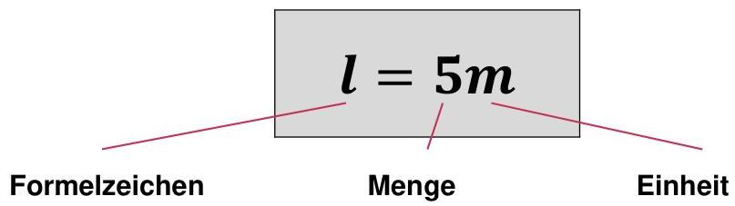

Skript-Bezug

Tipp: Achte auf die Unterscheidung zwischen
Formelzeichen (z.B. m als Masse) und
Einheit (z.B. m als Meter).
SI-Überblick (Referenz)
SI-Basiseinheiten
| Grösse | Formelzeichen | Einheit | Name |
|---|---|---|---|
| Länge | l |
m |
Meter |
| Masse | m |
kg |
Kilogramm |
| Zeit | t |
s |
Sekunde |
| Elektrische Stromstärke | I |
A |
Ampere |
| Temperatur | T |
K |
Kelvin |
| Stoffmenge | n |
mol |
Mol |
| Lichtstärke | lv |
cd |
Candela |
Merke: m kann Einheit (Meter) oder
Formelzeichen (Masse) sein – Kontext entscheidet.
Beispiele abgeleiteter Einheiten
| Grösse | Formelzeichen | Einheit | Name |
|---|---|---|---|
| Kraft | F |
N |
Newton |
| Druck | p |
Pa |
Pascal |
| Arbeit / Drehmoment | W / M |
Nm |
Newtonmeter |
| Leistung | P |
W |
Watt |
| Geschwindigkeit | v |
m/s |
Meter pro Sekunde |
Nicht zum SI-System zählen z.B. bar,
°C, PS usw.
Zuordnen: Grösse → Formelzeichen & Einheit
Vorgehen: Wähle pro Grösse das passende Formelzeichen und die passende Einheit → „Prüfen“.
—
Einheitsvorsätze (Referenz + Mini-Check)
Referenz
| Potenz | Zeichen | Name | Beispiel |
|---|
Mini-Check
| Potenz | Zeichen | Name | Prüfen | Feedback |
|---|
—
Prefix-Konverter-Tool
Resultat:
—
—
Umrechnung:
—
Self-Check (kuratiert aus 4.1.3)
Lösung wird erst sichtbar, wenn du „Lösung anzeigen“ öffnest.